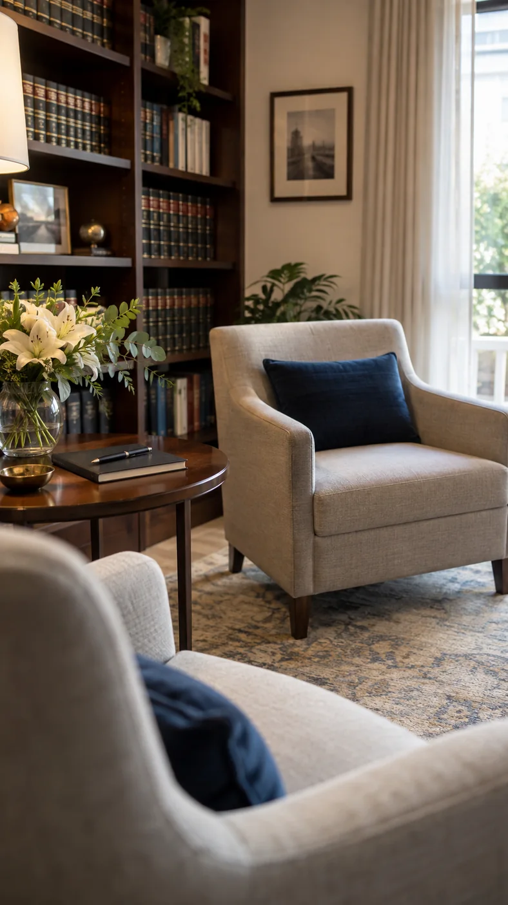
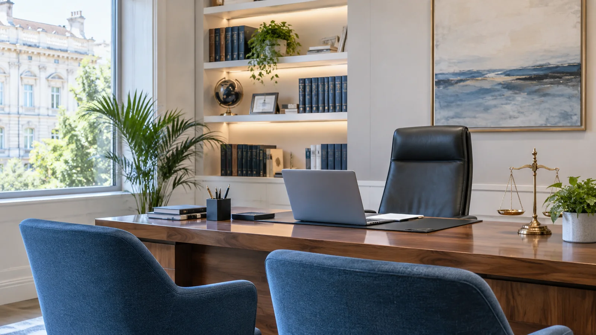

Estudio jurídico en Bahía Blanca
Familia, trabajo y contratos: te decimos qué se puede hacer
Estudio jurídico en Bahía Blanca. Escuchamos el caso, te lo explicamos en palabras claras y coordinamos el turno: en el estudio o por videollamada.
Familia · Penal · Laboral · Contratos · Inmobiliario · Previsional · Amparos · Cartas documento

9 a 18 hLunes a viernes, con corte de 13 a 15. Bahía Blanca y zona.
01 / Áreas
Qué resolvemos
Ocho áreas de atención. Si tu consulta entra en más de una, la vemos en conjunto.
-
01
Familia
Divorcios, cuota alimentaria, régimen de comunicación y medidas urgentes cuando la situación no da para esperar.
Pedir turno por este tema -
02
Contratos
Redacción y revisión antes de firmar: qué te obliga cada cláusula, qué falta y cómo se sale si algo no se cumple.
Pedir turno por este tema -
03
Laboral
Despidos, trabajo no registrado o mal registrado, accidentes y respuesta a telegramas dentro del plazo.
Pedir turno por este tema -
04
Inmobiliario
Alquileres, desalojos, boletos de compraventa, escrituración y conflictos de consorcio.
Pedir turno por este tema -
05
Previsional
Jubilaciones, pensiones, reajuste de haberes y trámites ante ANSES, con el seguimiento de cada presentación.
Pedir turno por este tema -
06
Amparos
Cuando la obra social o la prepaga niega una cobertura, un medicamento o una prestación que necesitás ya.
Pedir turno por este tema -
07
Derecho Penal
Asesoramiento y asistencia en consultas penales. Atención para urgencias penales las 24 horas.
Consulta penal 24 h -
08
Cartas documento
Redacción, envío y respuesta en término, con copia de todo lo que se mandó y de cuándo se mandó.
Pedir turno por este tema
¿No sabés en qué área entra tu tema? Contalo como te salga. Ubicarlo es parte de la primera consulta, no algo que tengas que resolver antes de escribir.
Atención directa
Asesoramiento penal y previsional
Podés consultar por temas penales y previsionales, conocer los primeros pasos y saber qué documentación conviene tener a mano.
Penal · atención 24 horas
Si se trata de una urgencia penal, escribinos en cualquier momento.
WhatsApp del estudio Asesoramiento: +54 11 1111-111102 / El estudio

El tema lo sigue la misma persona de punta a punta
Quien te escucha en la primera consulta es quien redacta los escritos, quien va a la audiencia y quien te contesta cuando escribís para saber cómo viene. Sin pases internos ni explicaciones distintas según con quién hables.
Primero el diagnóstico, después el presupuestoSalís de la primera consulta sabiendo qué se puede hacer y qué no, aunque la respuesta sea que no conviene iniciar nada.
Los escritos, en criolloCada presentación viene con una explicación de una carilla: qué se pidió, ante quién y qué puede pasar después.
Los plazos se avisan antesCuando un trámite tiene fecha de vencimiento, te llega el recordatorio con tiempo y la lista de lo que hay que juntar.
03 / Cómo trabajamos
Del papel que te llegó a la respuesta en término
Casi todos los temas empiezan igual: llega un papel con palabras que no se entienden y un plazo corriendo. Lo primero que hacemos es traducirlo.
Lo que dice el papel
«Intímase a Ud. a aclarar situación laboral en el plazo perentorio de 48 horas, bajo apercibimiento de considerarse injuriado.»
Así llega. Sin verbo amable y con un reloj adentro.
Lo que significa
Tenés 48 horas hábiles para contestar por escrito. Si no contestás, ese silencio se usa en tu contra.
Redactamos la respuesta, la mandamos y te queda la copia de lo que se dijo y cuándo se dijo.
00 h desde que llegó
Sacale una foto y mandala. Te decimos qué dice, qué plazo corre y si conviene contestarla.
-
01
Contás lo que pasó
Por WhatsApp o en el turno. Como te salga: la historia entera, sin ordenar. Ordenarla es trabajo nuestro.
-
02
Te decimos qué se puede hacer
Las opciones reales, con los plazos de cada una y qué documentación hace falta para empezar.
-
03
Lo llevamos adelante
Redacción, presentaciones y seguimiento. Cada movimiento del expediente te llega explicado.
04 / Galería
El trabajo, por dentro
Dónde se revisan los expedientes, dónde se firman los acuerdos y adónde van las presentaciones.
05 / Preguntas
Lo que más nos preguntan
Si tu duda no está acá, mandala por WhatsApp: se contesta igual, sin turno.
Me llegó una carta documento, ¿qué hago?
No la dejes pasar: los plazos se cuentan en días hábiles y son cortos. Mandanos una foto por WhatsApp, te decimos qué dice, qué plazo corre y si conviene contestarla.
¿Cómo es la primera consulta?
Es una reunión para entender el caso. Contás qué pasó, revisamos los papeles que tengas y salís sabiendo qué se puede hacer, qué falta juntar y cuánto puede llevar. Antes de arrancar te decimos qué se cobra y cómo.
¿Atienden por videollamada?
Sí. Elegís turno en el estudio o por videollamada cuando el tema no necesita que vengas. Las consultas de contratos y los trámites previsionales se resuelven bien a distancia.
¿Qué papeles llevo?
Lo que tengas: DNI, contratos, recibos de sueldo, telegramas, escrituras o capturas de conversaciones. Si no tenés nada a mano, venís igual: en la consulta armamos la lista de lo que hay que juntar.
¿Trabajan con casos de otra ciudad?
Atendemos en Bahía Blanca y la zona. Si el expediente tramita en otra jurisdicción, lo decimos en la primera consulta, antes de tomar el caso.
06 / Turnos
Pedí tu turno
Elegí el tema y cómo querés que nos veamos. Te mostramos los tres turnos más cercanos y el mensaje sale armado por WhatsApp.
Elegí un tema para ver los turnos.
Los horarios salen de la agenda del estudio: lunes a viernes, de 9 a 13 y de 15 a 18. El turno queda reservado cuando lo confirmamos por WhatsApp.
Horarios de atención
Dónde
Bahía Blanca y zona. Atendemos en el estudio con turno previo o por videollamada; la dirección exacta te llega al confirmar.